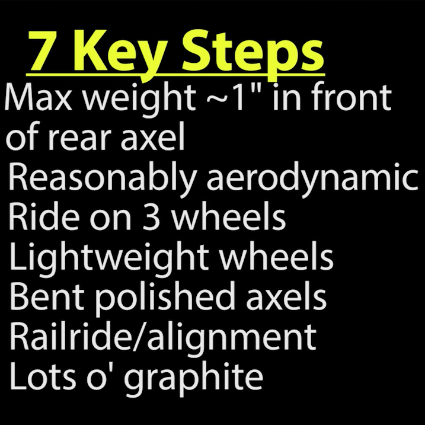

7 Pinewood Derby Car Tips

My boys aren't anywhere near the age of needing to build one (or have me build one, and them act like it was theirs). Regardless, I found this to be pretty interesting, and I love how it's possible to make a great car, in a relatively short amount of time. It feels like it leaves more time for the kids to make the car what they want... even though winning isn't everything (but it sure is nice).
Previously: DKNG Explorers Club Patch Next: Walking The Beat In Mr. Rogers' Neighborhood